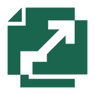

Learn DeepInferAN INDEPENDENT FRAMEWORK FIELD GUIDE
MAP · TRACE · UNDERSTAND
Read the code.
See the system.
Explore DeepInfer through architecture,
animated mechanisms, and a guided source map.
12 LESSONSINTERACTIVE中文 / ENGLISH
ENTRYPOINT
LLM.generate()SHARED STATE
KV blocks / prefixORCHESTRATION
LLMEngine.step()schedule → execute → update
EXECUTION
Worker / ModelRunnerDISTRIBUTION
Route / combine / EPLBFRAMEWORK EXPLANATIONS · VISUAL WALKTHROUGHS · PINNED SOURCElearn-deepinfer.github.io